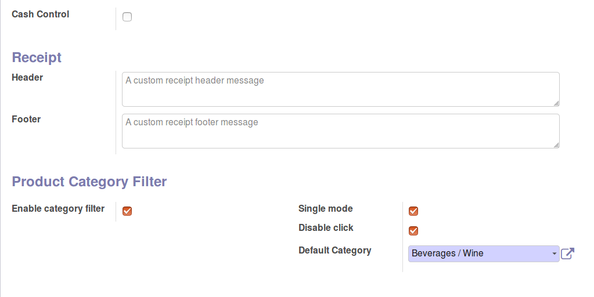
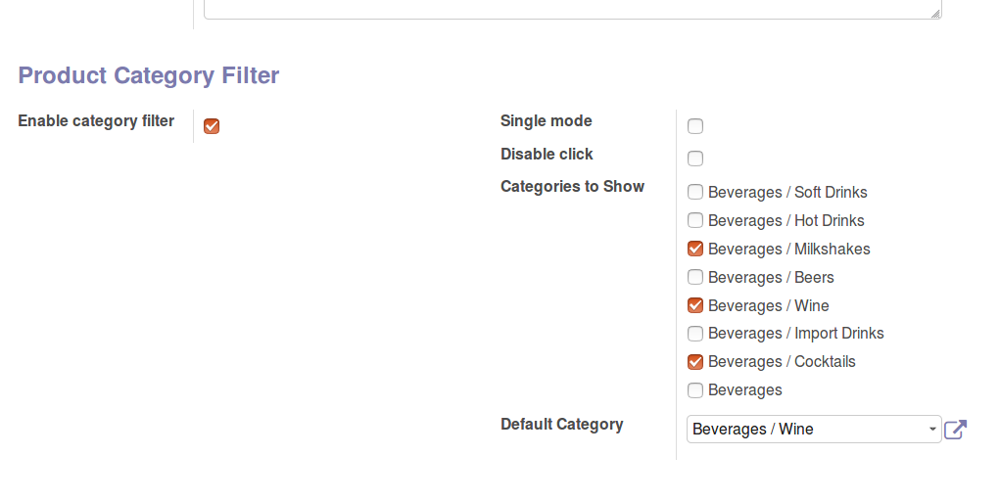

Product Category Filter for Point of Sale
Single Category Mode or Multi Category Mode
Installation
Single Category Mode
- Go to Point of Sale > Configuration > Point of Sale
- Select the POS you want to filter categories for
- Go to Product Category Filter Section
- Check Enable Category Filter
- Check Single Mode
- Check Disable Click
- Select a Category
- Save and return to POS

Multi Category Mode
- Go to Point of Sale > Configuration > Point of Sale
- Select the POS you want to filter categories for
- Go to Product Category Filter Section
- Check Enable Category Filter
- Check Categories to Show
- Set a Start Category
- Save and return to POS
